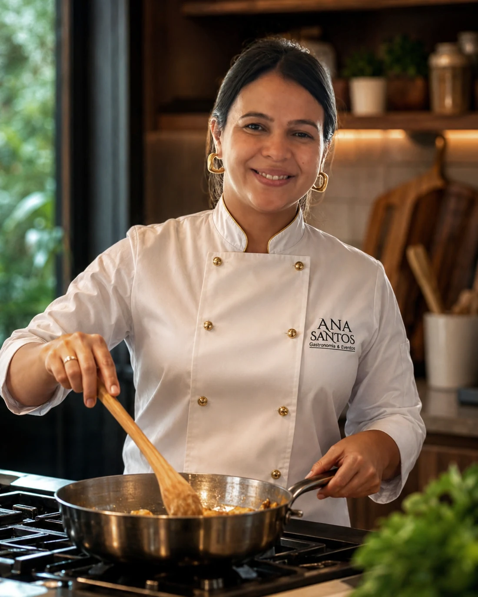
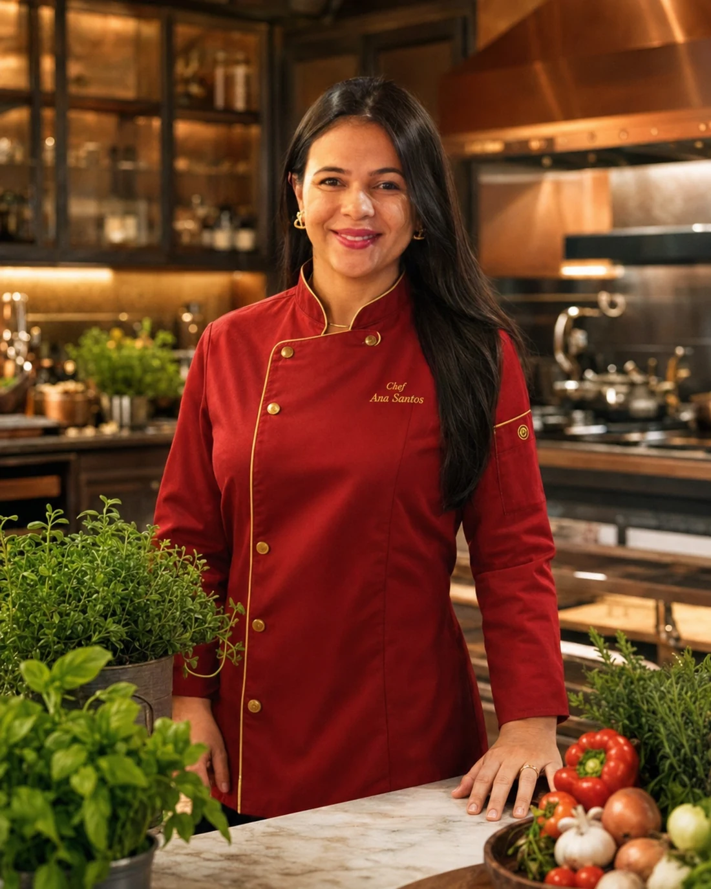
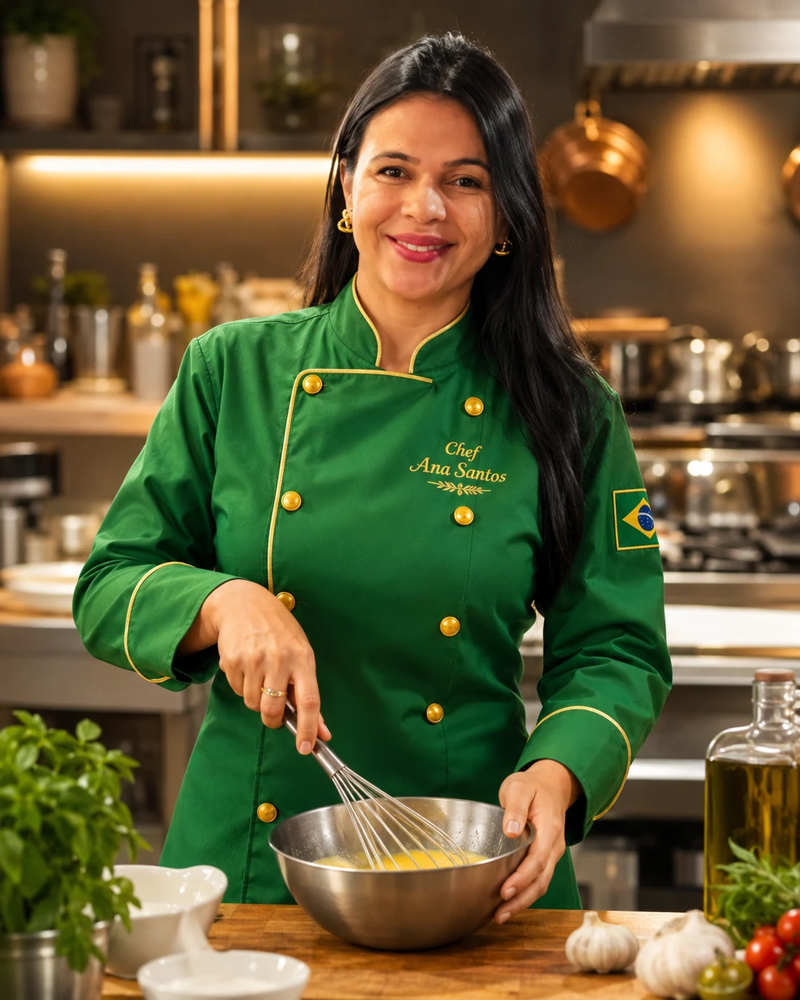
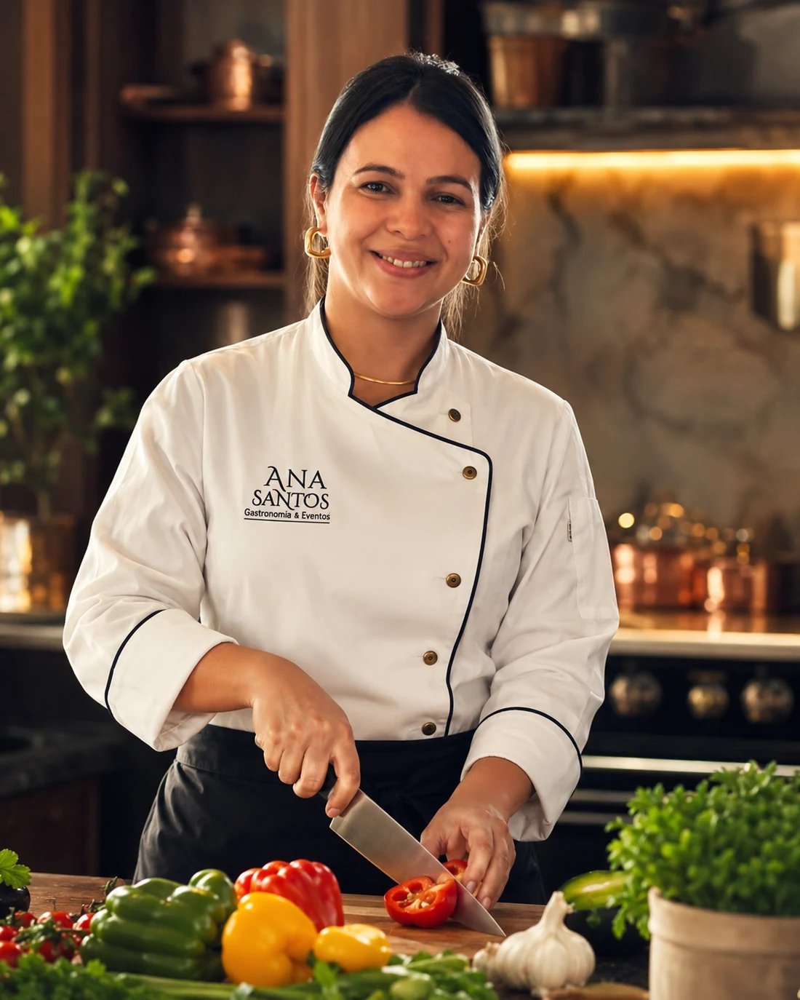
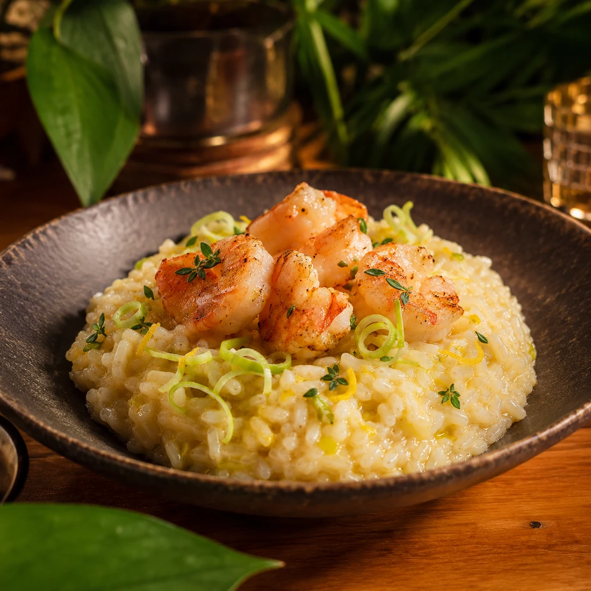
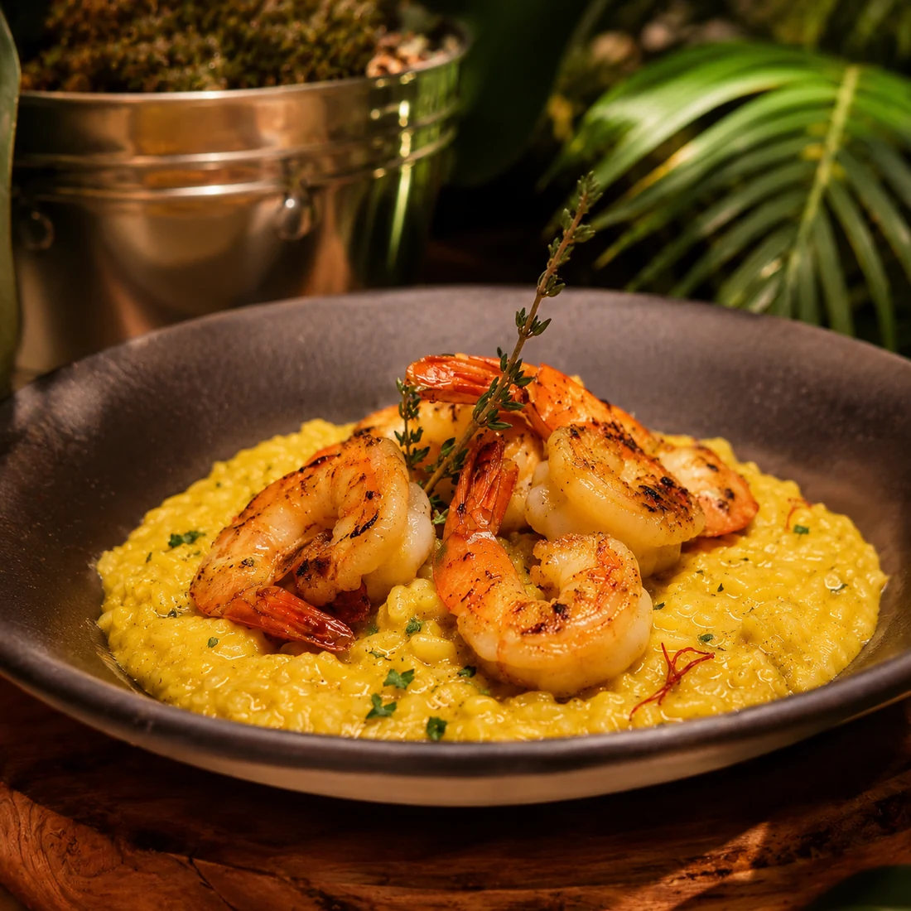
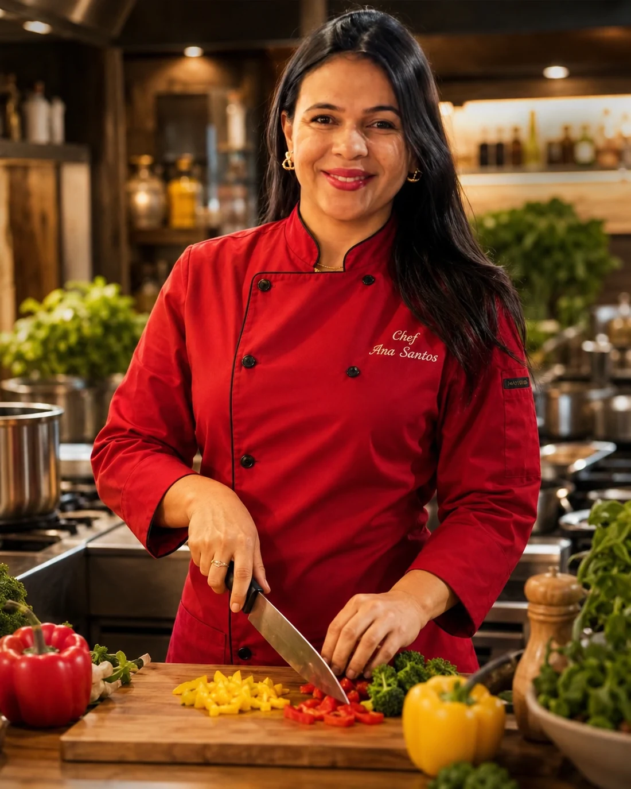

Assinatura
Risoto de camarões
Cremoso, dourado e finalizado com camarões grelhados.
Gastronomia brasileira premium
Feijoada Premium, jantares exclusivos e menus autorais para ocasiões que pedem presença, beleza e sabor.
Escolha simples
Cada opção abre uma seleção de pratos com cálculo por quantidade de pessoas, data e formato do pedido.

Todos os sábados ou em uma data exclusiva, com acompanhamentos calculados para o número de convidados.
Ver pratos e calcular ↗
Menus para aniversários, encontros de família, recepções e confraternizações.
Ver pratos e calcular ↗
Menu autoral para uma noite especial, com entrada, prato principal e sobremesa.
Ver pratos e calcular ↗
Receba tudo preparado, com instruções simples para finalizar e servir no melhor ponto.
Ver pratos e calcular ↗Assinatura visual
Esta versão usa uma atmosfera mais noturna e editorial: fundo escuro, detalhes dourados, imagens maiores e uma estética de jantar privado. A comida continua farta e brasileira, mas a percepção de valor sobe.



A Chef
A Chef Ana Santos une sabores brasileiros, preparo artesanal e apresentação elegante para criar experiências gastronômicas sob encomenda. A proposta não é apenas servir pratos, mas conduzir uma ocasião com cuidado do começo ao fim.
Especialidade brasileira
O clássico brasileiro ganha uma apresentação mais cuidadosa, acompanhamentos selecionados e uma proposta ideal para almoços, aniversários e confraternizações.
Quero proposta de feijoadaComo funciona
Data, número aproximado de pessoas e tipo de evento. Só o essencial.
A proposta considera estilo, quantidade de convidados e nível da experiência.
Menu, formato de serviço e próximos passos em uma conversa simples pelo WhatsApp.
“Você não precisa saber qual prato escolher. Só precisa contar qual ocasião deseja tornar especial.”
Chef Ana Santos
Orçamento guiado
O formulário foi feito para reduzir desistência. O cliente informa o básico e já sai para o WhatsApp com uma mensagem pronta.